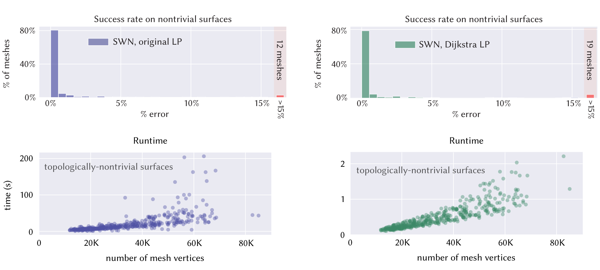

Winding Numbers on Discrete Surfaces
ACM Transactions on Graphics (SIGGRAPH 2023)
In the plane, the winding number is the number of times a curve wraps around a given point. Winding numbers are a basic component of geometric algorithms such as point-in-polygon tests, and their generalization to data with noise or topological errors has proven valuable for geometry processing tasks ranging from surface reconstruction to mesh booleans. However, standard definitions do not immediately apply on surfaces, where not all curves bound regions. We develop a meaningful generalization, starting with the well-known relationship between winding numbers and harmonic functions. By processing the derivatives of such functions, we can robustly filter out components of the input that do not bound any region. Ultimately, our algorithm yields (i) a closed, completed version of the input curves, (ii) integer labels for regions that are meaningfully bounded by these curves, and (iii) the complementary curves that do not bound any region. The main computational cost is solving a standard Poisson equation, or for surfaces with nontrivial topology, a sparse linear program. We also introduce special basis functions to represent singularities that naturally occur at endpoints of open curves.
Paper
Acknowledgements
This work was funded by an NSF CAREER Award (IIS 1943123), NSF Award IIS 2212290, a Packard Fellowship and gifts from Facebook Reality Labs, and Google, Inc.
Bibtex
@article{Feng:2023:WND,
author = {Feng, Nicole and Gillespie, Mark and Crane, Keenan},
title = {Winding Numbers on Discrete Surfaces},
journal = {ACM Trans. Graph.},
volume = {42},
number = {4},
year = {2023},
publisher = {ACM},
address = {New York, NY, USA},
issn = {0730-0301},
url = {https://doi.org/10.1145/3592401},
doi = {10.1145/3592401},
month = {jul},
articleno = {36},
}
Supplement: Perspectives on Winding Numbers
Errata
Nicole Feng has a list of detailed errata available on her website. The upshot is that after publication, we realized that you can approximate the solution to the linear program in our algorithm (left), resulting in a 100x speedup (right).
In addition, we realized that something went wrong when measuring runtime in the paper, and the correct runtimes are actually ~5x faster than those reported.